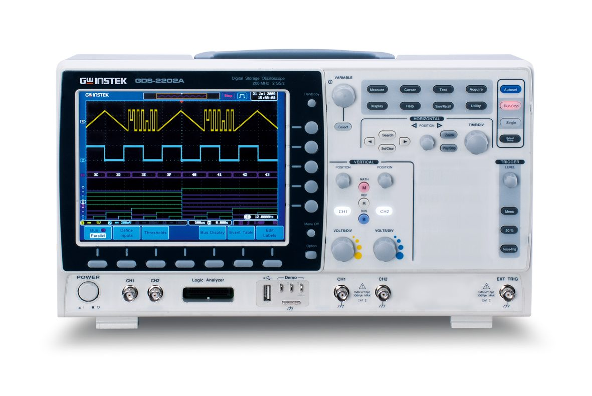
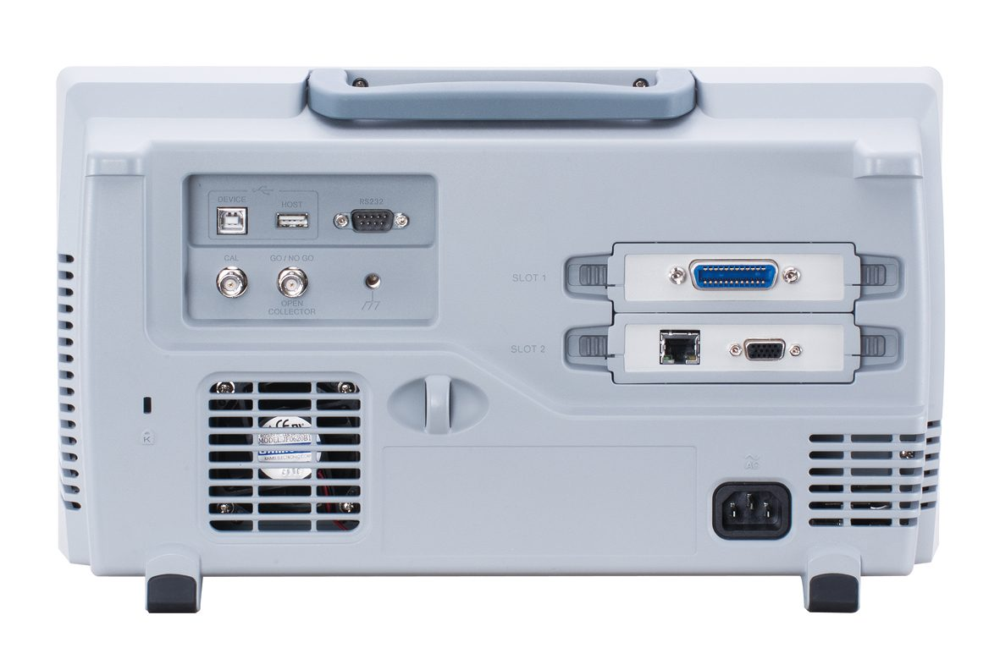

מפרט טכני ומאפיינים דיגיטליים
מכשיר ה-GDS-2072A מבית GW Instek הוא אוסילוסקופ דיגיטלי מתקדם (DSO - Digital Storage Oscilloscope) בעל רוחב פס של \(70\text{ MHz}\) ושני ערוצי מדידה. למכשיר קצב דגימה בזמן אמת של \(2\text{ GSa/s}\) (שני מיליארד דגימות בשנייה!) וזיכרון עמוק של 2M נקודות ללכידת אותות ארוכים ברזולוציה גבוהה.
בניגוד למכשיר אנלוגי, המכשיר הדיגיטלי דוגם את האות ומאחסן אותו בזיכרון, דבר המאפשר לבצע חישובים אוטומטיים של פרמטרים (כמו תדר ומתח), להקפיא את התמונה (Single Trigger), לבצע פעולות מתמטיות (כמו FFT) ולשמור צילומי מסך ישירות להתקן דיסק-און-קי (USB).
באיורים משמאל מוצגים הלוח הקדמי, הלוח האחורי ותרשים בקרות הלוח של מכשיר ה-GDS-2072A המצוי במעבדה. שימו לב למחברי ה-BNC של ערוצים 1 ו-2 בלוח הקדמי, לשקע ה-USB לחיבור דיסק-און-קי, ולחיבורי התקשורת בלוח האחורי.

מבט חזיתי

מבט אחורי

תרשים בקרות